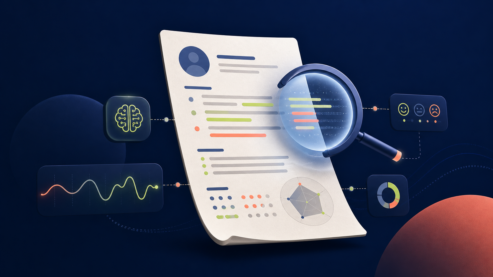
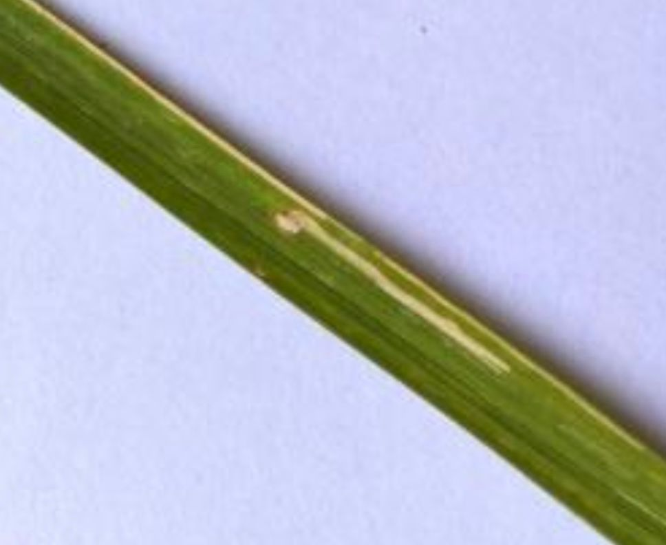

learn / dashboard
Continue learning
Online Learning Platform
A learning-focused web application designed to make courses and progress easy to explore.
Available for internships & collaborations
I’m Likith — an AI & ML engineering graduate and full-stack developer who turns ideas into practical, thoughtful products.
01 / ABOUT ME
I enjoy the full journey of building something useful: understanding the problem, shaping an approachable interface, and bringing it to life with reliable code.
My work sits between intelligent systems and modern web development. I’ve explored deep learning and NLP projects, while also building end-to-end applications with Java, Spring MVC, HTML, CSS, and JavaScript.
02 / SELECTED WORK
A learning-focused web application designed to make courses and progress easy to explore.
A full-stack bookstore experience with browsing, cart management, and a streamlined checkout flow.
A focused registration system built to make student information capture clear and efficient.

An AI-powered system that explores resumes with Generative AI and sentiment analysis to surface useful screening insights.

A deep-learning computer vision project for recognizing rice crop diseases from images, supporting earlier identification in the field.
03 / TOOLKIT
Python, Java, JavaScript, HTML, CSS, SQL
Machine Learning, Deep Learning, NLP, Computer Vision, Generative AI
Spring MVC, React, Node.js, REST APIs, Git, Responsive Design
05 / CONTACT
I’m always happy to connect about an internship, an interesting project, or a chance to learn and contribute.